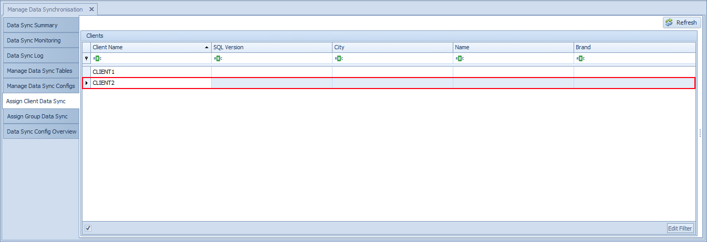
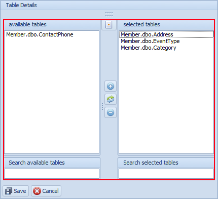
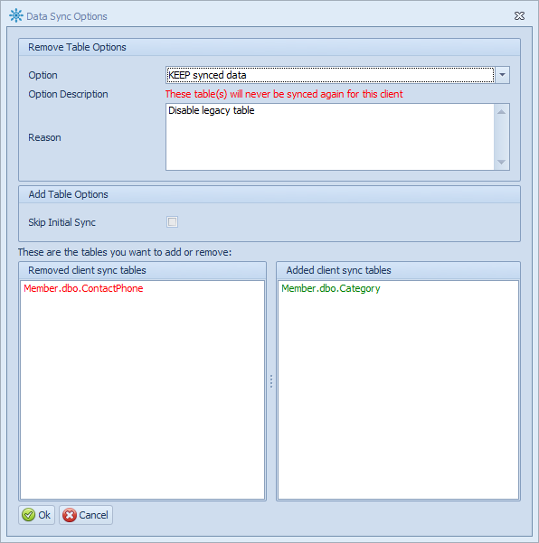
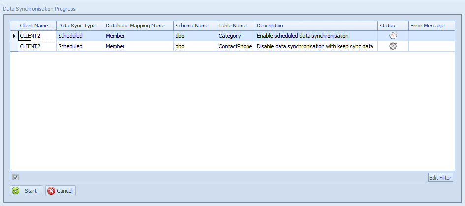

Assign Client Data Synchronisation
The Assign Client Data Sync option allows you to assign the previously defined tables to the Clients with which the tables will be synchronised. This allows the configuration of Data Synchronisation at the lowest level of detail, at the individual client instance or table level. This would primarily be used with one-to-one sync.
Select the Assign Client Data Sync tab in the user interface.
The Client assignment window is divided into two parts:
- The list of clients associated with the Central Server
- The list of available and selected tables
To assign tables to the Clients:
Select the relevant Client.

Select the tables you want to add or remove from sync.

Click Save to confirm the selection.
If you are disabling one or more tables make sure that you fill in a detailed reason in the screen below.

Confirm the tables that you are enabling/disabling below and then click on the Start button to enable the sync and wait for the process to complete.

Note
When the assignment is successfully saved, data synchronisation is immediately enabled at the selected client and data will begin synchronising into the Central server.
Depending on data volumes and the number of tables involved this process may take several minutes to complete.
Warning
If the tables are very large (for example, millions of rows), it is recommended that a data synchronisation process is performed at a time when the tables are not being used (for example, after trading hours at a retail store). The reason for this is that the tables at the client are locked during this initial synchronisation phase and in the case of large tables this table locking could last several minutes. Consequently, transactional systems which write to these tables will be blocked thus affecting business processes.
To monitor the progress of the data synchronisation, refer to the Data Sync Monitoring and Data Sync Log screens.